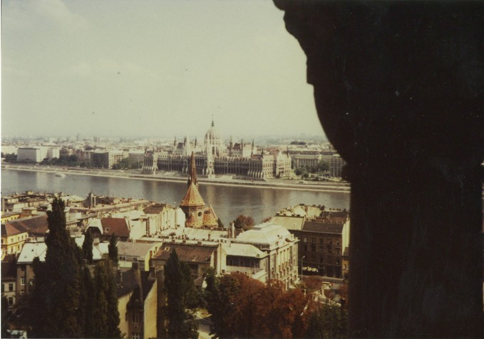

Inter Rail 1984 Day 9
Monday 10th September 1984
Had a damned good nights sleep but as the bed was incredibly lumpy and hard, woke up with an incredibly bad back.
It took about an hour to really get up and going. Sat around, wrote the remaining postcards, read books and generally lazed around. Had a
"conversation" with the mother-in-law about what time we were leaving. Had another chat with the British lads next door.We found out that they
were Glasgow medics. The Scottish one was nice but the English one was a tad big headed.

We packed up and left carrying our rucksacks. Bought a hot dog and sat on a park bench to eat it. We eventually found somewhere to buy some
food. Bought cheese, meat, butter and rolls all for about £1. Mosied off towards the lake and after a 3 mile hike found an area of grass
near the lakeside which we didn't have to pay and for where there were no warning signs.
Sat, semi-sunbathed and read "Auditing and Reporting" whilst eating a roll. Had a quick paddle in the largest freshwater lake in S.E. Europe.
Took some photos. Jon went for a piss and a swim. Just as we got out all hell let loose as a hurricane wind blew up within 2 seconds flat. We
hastily packed our bags and tried to leave quietly without being blown over. Had a look at the local InTourist shop. Prices were quite a bit
more than one would expect to pay duty free. No local currency accepted so the shop was only any good for tourists as locals can't get at
foreign currency.
As it was a bit cold we decided not to mooch around in Siófok any longer. We caught the 15.51 train to Budapest Deli Pu. There was an amazing
system for catching the train. When it arrived on "Platform" 4 everyone walked across lines 1,2 and 3 and hopped onto the train in a melee.
It's a long way up into the train from the ground. Somebody really must tell them about platforms.
Bought an apple each in Deli Pu station, then took the underground to Keleti Pu. Got ticket endorsed, bought a piece of pizza and argued over
whether or not to get a cup of coffee. As we had 3 hours to kill we went into the large waiting room where there were spare tables but not
chairs. Played German Whist, Snatch and Crib for a while plus a few games of Patience. The train got in at 8.45pm so got onto it and sat in
the dark.
When I swore at the window for not staying open we got talking to an English speaking East German lad who eventually joined us for a long chat
in our compartment. He shared his Hungarian Bulls Blood wine and his homemade apricot/plum brandy/firewater. Very pleasant. The train left at
9.30pm bang on time. It was called the Orient Express. The three of us had a compartment to ourselves.
At 11.30pm the Hungarian exit people arrived, checked our passports, took the pink entry slip and stamped the passports. The seats were then
checked under and a man asked us what Hungarian money we had left. Apparently even though you can take out 500 forints in 100 forint notes,
you can't take out a 500 forint note. Settled down to get some kip about midnight.
- The East German lad was a student of Theology as as such an unusual type. He told us he is not allowed to visit Western Europe at all and
can sometimes visit the Eastern Block countries but it is as difficult for him to get into Russia as it is for us. He got very nervous at each
border in case he was refused entry for an unknown reason or for carrying German/Greek and German/Hebrew dictionaries.
- Cars and other luxury items are very expensive and have to be saved up for for ages. Even when you have enough money saved the goods may
not be available. 8 to 12 weeks is the average waiting time for a car.
- To get to university not only must your grades be right but you must be a good Marxist and follow the party line. It is possible to put
your name on a list to leave permanently but this can takes weeks,months,years if ever to come through.
- National Service for 18 months is compulsory or there is a prison sentence. There is a non gun carrying version avaialable but it is
heavily frowned upon and being phased out.
- He said that Hungary was the most Westernised of the Eastern Bloc countries. Hungarians can travel to the West and things are easier there.
He found Hungary very expensive. The exchange rate for East German marks is 5 times worse than for West German marks. Romania is apparently
very Stalinist, poor and short on food.
- He was a little dischuffed with life but felt the church was his cause. Apparently there is no unemployment in the GDR. Men in factories
are paid for doing nothing. He told us that the Hungarian language is North European in origin as the original Hungarian settlers came from
Finland.